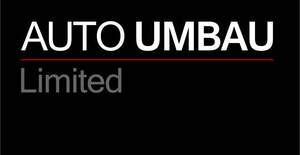

Trade Mark Journal No.2025/048 28 November 2025
UK00004297345 19 November 2025 (37)

- Class 37
- Car maintenance; Garage services for vehicle repair; Arranging of vehicle repairs; Garage services for automobile repair; Garage services for motor vehicle repair; Automobile repair; Garage services for the maintenance and repair of motor vehicles; Vehicle maintenance and repair; Vehicle repair and maintenance; Automobile repair and maintenance; Vehicles maintenance and repair; Maintenance and repair of vehicles; Repair and maintenance of vehicles; Maintenance or repair of automotive vehicles; Motor vehicle maintenance and repair; Maintenance and repair of motor vehicles; Repair and maintenance of motor vehicles; Maintenance, servicing and repair of vehicles; Motor vehicle repair; Maintenance and repair of automobiles; Repair and maintenance of automobiles; Repair or maintenance of automobiles; Motor vehicle repair and maintenance services; Motor vehicle maintenance and repair services; Vehicle repair services; Repair of automobiles; Repair of motor vehicles; Repair of accident damage to vehicles; Maintenance and repair of motor vehicle engines; Garage services for vehicle maintenance; Maintenance and repair of motor vehicles for transportation of passengers; Maintenance and repair of motor land vehicles; Vehicle upholstery and repair services; Motor vehicle trim repair; Maintenance and repair of land vehicles; Repair and maintenance of land vehicles; Land vehicle repair; Repair of vehicle tow bars; Vehicle repair consultancy; Servicing of cars; Services for the repair of motor vehicles; Arranging for the repair of motor land vehicles; Repair of windscreens; Repair of land vehicles; Maintenance and repair of motor vehicles and their engines; Vehicle servicing; Maintenance and repair of chassis parts and bodies for vehicles; Vehicle maintenance; Maintenance (Vehicle -); Maintenance and repair of motor vehicle cooling systems; Inspection of vehicles prior to repair; Maintenance and repair of motor vehicles and parts thereof; Maintenance and repair of motors; Repair of brake systems for vehicles; Maintenance, servicing, tuning and repair of motors; Inspection of automobiles and their parts prior to maintenance and repair; Motor vehicle maintenance.
Auto Umbau Limited